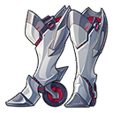
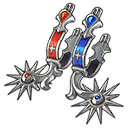

추천 광추
증식
일반 공격을 자주 쓰는 파티
효과 자세히
5중첩 기준 일반 공격 후 다음 행동 게이지가 20% 증가합니다. 일반 공격을 자주 사용해 전투 스킬 포인트를 더 빠르게 벌 수 있습니다.
등가교환
아군의 필살기 회전을 지원
효과 자세히
5중첩 기준 갤러거의 턴 시작 시 에너지가 50% 미만인 다른 아군 중 무작위 1명에게 에너지 16pt를 회복합니다. 갤러거의 필살기 직후 당겨진 턴에도 발동할 수 있습니다.
수술 후의 대화
필살기와 만취를 자주 갱신
효과 자세히
5중첩 기준 에너지 회복효율이 16% 증가합니다. 전투 스킬을 아끼면서도 필살기를 더 자주 써야 할 때 선택할 수 있습니다.
무엇이 진실인가
부족한 격파 특수효과 보충
효과 자세히
5중첩 기준 격파 특수효과가 48% 증가하며, 일반 공격 후 갤러거가 자기 HP를 회복합니다. 격파 특수효과는 행적을 통해 치유량에도 기여합니다.
알맞은 타이밍
갤러거의 행동과 회복을 안정화
효과 자세히
5중첩 기준 효과 저항이 32% 증가하며, 효과 저항에 비례해 치유량이 최대 27% 증가합니다. 성혼 1과 효과 저항 행적을 활용하기 좋습니다.
추천 유물
곤충 재앙을 잠재우는 철기군 4 · 겁화 연등의 연마궁 2
- 머리
 주옵션HP부옵션속도 · 격파 특수효과 · 효과 저항 · HP% / 방어력%
주옵션HP부옵션속도 · 격파 특수효과 · 효과 저항 · HP% / 방어력% - 손
 주옵션공격력부옵션속도 · 격파 특수효과 · 효과 저항 · HP% / 방어력%
주옵션공격력부옵션속도 · 격파 특수효과 · 효과 저항 · HP% / 방어력% - 몸통
 주옵션치유량부옵션속도 · 격파 특수효과 · 효과 저항 · HP% / 방어력%
주옵션치유량부옵션속도 · 격파 특수효과 · 효과 저항 · HP% / 방어력% - 다리

주옵션속도부옵션격파 특수효과 · 효과 저항 · HP% / 방어력% - 구체
 주옵션HP% / 방어력%부옵션속도 · 격파 특수효과 · 효과 저항 · HP% / 방어력% (주옵션 제외)
주옵션HP% / 방어력%부옵션속도 · 격파 특수효과 · 효과 저항 · HP% / 방어력% (주옵션 제외) - 매듭
 주옵션에너지 회복효율 / 격파 특수효과부옵션속도 · 격파 특수효과 (주옵션 제외) · 효과 저항 · HP% / 방어력%
주옵션에너지 회복효율 / 격파 특수효과부옵션속도 · 격파 특수효과 (주옵션 제외) · 효과 저항 · HP% / 방어력%
이 조합을 추천하는 이유
철기군은 갤러거 자신의 격파 피해를 높입니다. 겁화 연등은 속도를 올리고, 반디가 화염 약점을 부여한 적을 명중하면 격파 특수효과가 40% 증가합니다.
태양과 번개의 여전사 4 · 부러진 용골 2
- 머리
 주옵션HP부옵션속도 · 격파 특수효과 · 효과 저항 · HP% / 방어력%
주옵션HP부옵션속도 · 격파 특수효과 · 효과 저항 · HP% / 방어력% - 손
 주옵션공격력부옵션속도 · 격파 특수효과 · 효과 저항 · HP% / 방어력%
주옵션공격력부옵션속도 · 격파 특수효과 · 효과 저항 · HP% / 방어력% - 몸통
 주옵션치유량부옵션속도 · 격파 특수효과 · 효과 저항 · HP% / 방어력%
주옵션치유량부옵션속도 · 격파 특수효과 · 효과 저항 · HP% / 방어력% - 다리

주옵션속도부옵션격파 특수효과 · 효과 저항 · HP% / 방어력% - 구체
 주옵션HP% / 방어력%부옵션속도 · 격파 특수효과 · 효과 저항 · HP% / 방어력% (주옵션 제외)
주옵션HP% / 방어력%부옵션속도 · 격파 특수효과 · 효과 저항 · HP% / 방어력% (주옵션 제외) - 매듭
 주옵션에너지 회복효율부옵션속도 · 격파 특수효과 · 효과 저항 · HP% / 방어력%
주옵션에너지 회복효율부옵션속도 · 격파 특수효과 · 효과 저항 · HP% / 방어력%
이 조합을 추천하는 이유
여전사는 다른 아군을 회복하면 갤러거의 속도와 파티의 치명타 피해를 높입니다. 용골은 갤러거의 효과 저항이 30% 이상일 때 파티에 치명타 피해 10%를 추가합니다.
이 정도면 잘 키웠다
같은 파티·광추 기준의 육성 목표입니다. 조건은 [*]에서 확인하세요.
| 스탯 | 추천 스탯 | 준종결 | 종결 |
|---|---|---|---|
| 속도 [*] 134·143·160은 가이드의 범용 목표를 나눈 값이며 파티마다 필요한 행동 순서는 다릅니다. 「증식」의 행동 게이지 증가와 필살기 후 자신의 행동 게이지 100% 증가도 순서에 영향을 줍니다. 딜러가 행동하기 전에 포인트를 벌어야 한다면 실제 행동 순서로 확인하고, 마을 속도만 보고 무조건 딜러보다 빠르게 맞추지는 마세요. | 전투 134+ | 전투 143+ | 전투 160 초과 |
| 격파 특수효과 · 치유 [*] 승급 행적은 격파 특수효과의 50%를 치유량 증가로 전환하며, 전투 중 격파 특수효과 150%에서 치유량 증가 75%의 상한에 도달합니다. 파티·장신구의 전투 버프를 포함해 판단하세요. 60%는 입문용 권장 수준이고 치유 발동 조건은 아닙니다. 갤러거의 치유는 HP나 공격력이 아니라 스킬의 고정 수치와 치유량 보너스에 의존합니다. | 마을 60%부터 | 전투 150% | 전투 150% 유지 |
| 격파 특수효과 · 철기군 [*] 「곤충 재앙을 잠재우는 철기군」 4세트에서 전투 중 격파 특수효과 150%는 격파 피해의 방어력 10% 무시, 250%는 슈퍼 격파 피해의 추가 방어력 15% 무시 조건입니다. 슈퍼 격파 파티에서만 250%를 별도 목표로 보세요. 그 이상도 격파 피해는 늘지만 세트 효과가 더 추가되지는 않습니다. 다른 유물의 치유 담당이라면 250%가 필수는 아닙니다. | 전투 150% | 전투 250% | 전투 250%+ |
| 효과 저항 [*] 「부러진 용골」은 전투 중 효과 저항 30%가 조건입니다. 갤러거 1돌은 전투 중 효과 저항 50%를 더하므로 마을 50%이면 전투 100%가 됩니다. 행적과 장신구를 포함한 총합으로 확인하세요. 100%는 디버프 대응을 위한 선택 목표이며, 1돌이 없거나 속도·치유량을 크게 포기해야 한다면 강제하지 않습니다. | 용골 사용 시 전투 30%+ | 용골 사용 시 전투 30%+ | 전투 100% · 선택 목표 |
육성 단계의 기준
캐릭터·광추 80레벨, 핵심 행적 개방, 주요 유물 +15 기준입니다. 단계는 가이드 범위를 나눈 편집상 목표입니다. 치유의 격파 특수효과 150% 상한과 철기군의 150%·250% 조건을 구분합니다. 슈퍼 격파 딜러로 쓸 때는 격파 특수효과 150%를 넘겨도 유효하며, 전투 수치는 실제 적용된 파티·장신구·돌파 버프를 포함합니다.
스탯 조건과 각주
- 속도 134·143·160은 가이드의 범용 목표를 나눈 값이며 파티마다 필요한 행동 순서는 다릅니다. 「증식」의 행동 게이지 증가와 필살기 후 자신의 행동 게이지 100% 증가도 순서에 영향을 줍니다. 딜러가 행동하기 전에 포인트를 벌어야 한다면 실제 행동 순서로 확인하고, 마을 속도만 보고 무조건 딜러보다 빠르게 맞추지는 마세요. ↑
- 격파 특수효과 · 치유 승급 행적은 격파 특수효과의 50%를 치유량 증가로 전환하며, 전투 중 격파 특수효과 150%에서 치유량 증가 75%의 상한에 도달합니다. 파티·장신구의 전투 버프를 포함해 판단하세요. 60%는 입문용 권장 수준이고 치유 발동 조건은 아닙니다. 갤러거의 치유는 HP나 공격력이 아니라 스킬의 고정 수치와 치유량 보너스에 의존합니다. ↑
- 격파 특수효과 · 철기군 「곤충 재앙을 잠재우는 철기군」 4세트에서 전투 중 격파 특수효과 150%는 격파 피해의 방어력 10% 무시, 250%는 슈퍼 격파 피해의 추가 방어력 15% 무시 조건입니다. 슈퍼 격파 파티에서만 250%를 별도 목표로 보세요. 그 이상도 격파 피해는 늘지만 세트 효과가 더 추가되지는 않습니다. 다른 유물의 치유 담당이라면 250%가 필수는 아닙니다. ↑
- 효과 저항 「부러진 용골」은 전투 중 효과 저항 30%가 조건입니다. 갤러거 1돌은 전투 중 효과 저항 50%를 더하므로 마을 50%이면 전투 100%가 됩니다. 행적과 장신구를 포함한 총합으로 확인하세요. 100%는 디버프 대응을 위한 선택 목표이며, 1돌이 없거나 속도·치유량을 크게 포기해야 한다면 강제하지 않습니다. ↑
성혼과 추천 돌파
성혼 0부터 만취를 통한 회복과 격파 피해 지원을 할 수 있습니다. 아군 디버프 해제가 필요하면 성혼 2, 슈퍼 격파 파티에서 갤러거의 강인성 감소량과 격파 피해를 높이려면 성혼 6이 목표입니다.
1시작 에너지 · 효과 저항
전투 진입 시 에너지 20pt를 회복하고 갤러거의 효과 저항이 50% 증가합니다.
2전투 스킬로 디버프 해제추천
전투 스킬로 대상 아군의 디버프 1개를 해제합니다. 대상의 효과 저항도 2턴 동안 30% 증가합니다.
3전투 스킬 · 일반 공격 강화
전투 스킬 레벨이 2, 일반 공격 레벨이 1 증가합니다. 최대 레벨은 각각 15와 10입니다.
4필살기 만취 1턴 연장
필살기로 거는 만취가 2턴에서 3턴으로 늘어 아군이 공격으로 회복할 기회가 늘어납니다.
5필살기 · 특성 강화
필살기와 특성 레벨이 각각 2 증가합니다. 두 기술의 최대 레벨은 15입니다.
6격파 특수효과 · 약점 격파 효율추천
격파 특수효과와 약점 격파 효율이 각각 20% 증가해 화염 약점 적의 강인성을 더 많이 깎을 수 있습니다.
추천 파티


기본 운영과 행적
전투 역할
갤러거는 페나코니 사냥개 가문의 보안관이자 4성 화염·풍요 캐릭터입니다. 필살기로 모든 적에게 만취를 걸면 그 적이 받는 격파 피해가 증가하고, 공격한 아군은 HP를 회복합니다.
- 4단계 승급 행적을 열면 필살기 직후 갤러거의 행동이 즉시 돌아옵니다. 강화 일반 공격으로 강인성을 깎고 전투 스킬 포인트를 회복할 수 있습니다.
- 전투 스킬은 단일 아군을 직접 치유합니다. 성혼 2를 열면 대상의 디버프도 1개 해제합니다.
광추와 유물
- 광추는 격파 특수효과를 주는 「무엇이 진실인가」나 일반 공격 후 행동을 앞당기는 3성 「증식」으로 시작할 수 있습니다. 전투 스킬을 자주 써야 할수록 「증식」 효과를 받는 횟수는 줄어듭니다.
- 터널 유물은 속도나 격파 특수효과를 주는 2세트 조합을 사용하세요. 반디와 함께라면 화염 약점이 있는 적을 공격할 때 효과를 받는 「겁화 연등의 연마궁」 2세트를 고려할 수 있습니다.
- 주옵션은 몸통 치유량 보너스, 신발 속도, 차원 구체 HP% 또는 방어력%, 연결 매듭 에너지 회복효율을 권장합니다.
행적과 부옵션
특성을 가장 먼저 강화하고, 전투 스킬은 직접 치유가 부족할 때 올리세요. 속도를 먼저 챙긴 다음 격파 특수효과와 생존 옵션을 보강하세요.
- 2단계 승급 행적의 격파 특수효과에 따른 치유량 보너스는 격파 특수효과 150%에서 상한에 도달합니다.
- 6단계 승급 행적을 열면 강화 일반 공격으로 만취 상태의 적을 공격할 때 다른 아군도 회복합니다.
기준과 출처 · 2026-11-25
KQM 3.0 가이드와 Prydwen 3.4 주요 빌드 분석 기반 입문 세팅